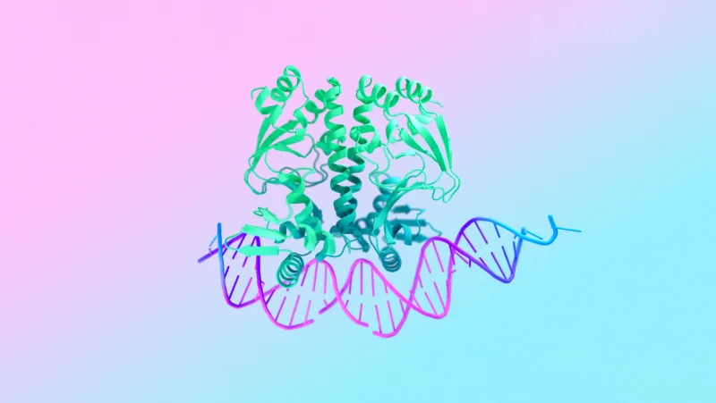
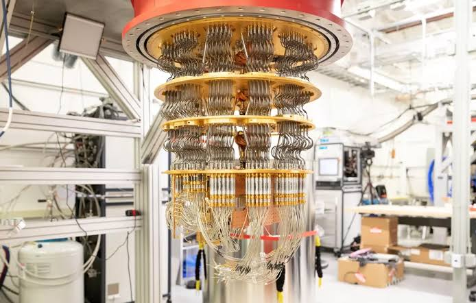
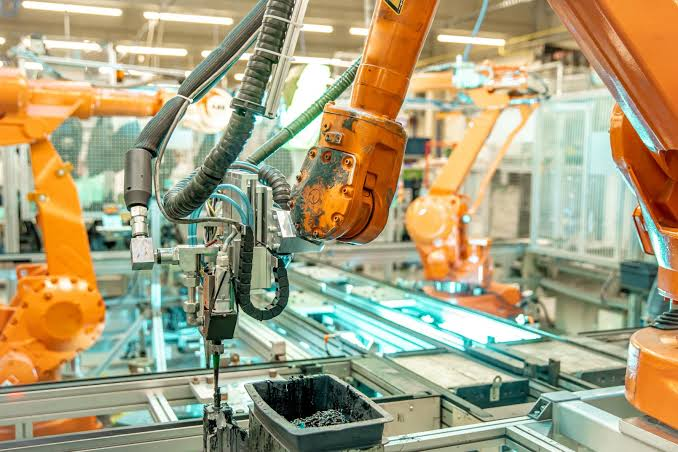
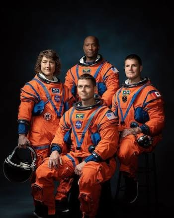

Avances que definirán el mañana
El futuro estará marcado por avances científicos y tecnológicos capaces de transformar nuestra forma de vivir, aprender, trabajar y relacionarnos. Algunas de estas innovaciones ya están en desarrollo, mientras que otras todavía representan posibilidades que la ciencia busca hacer realidad.
Inteligencia artificial
Imagina sistemas capaces de aprender de los datos para reconocer patrones, predecir resultados o crear contenido. Se espera que la inteligencia artificial se vuelva tan habitual en la investigación, la educación, la medicina o la ingeniería como hoy lo son Internet o el computador. Ya hay señales de ese camino: AlphaFold, creado por DeepMind, predice la forma tridimensional de las proteínas; por ese trabajo, Demis Hassabis y John Jumper compartieron el Nobel de Química 2024 con David Baker.
Gracias a estos avances, los científicos podrían analizar datos complejos con mayor rapidez, los estudiantes recibirían explicaciones adaptadas a su ritmo, los médicos contarían con apoyo para interpretar imágenes o asistir cirugías, mientras que los ingenieros podrían diseñar, simular o probar soluciones en menos tiempo. Eso sí, su uso exige responsabilidad: cuidar la privacidad de las personas, así como verificar cada resultado antes de confiar en él.

Medicina personalizada
¿Y si cada tratamiento se diseñara a la medida de quien lo recibe? Hacia allí apunta esta área, que busca dejar de tratar a todas las personas por igual para adaptar la prevención y el tratamiento a las características de cada una, empezando por sus genes. Las bases ya existen: en 2003 se completó la secuenciación del genoma humano; más tarde, CRISPR-Cas9, desarrollada por Jennifer Doudna y Emmanuelle Charpentier (Nobel de Química 2020), permitió editar genes, mientras que los estudios de Katalin Karikó y Drew Weissman sobre el ARNm (Nobel de Medicina 2023) hicieron posibles las vacunas contra la COVID-19.
Al combinar la genética con la inteligencia artificial o la biotecnología, en el futuro sería posible detectar enfermedades de forma más temprana y precisa, elegir terapias según el perfil genético de cada paciente o identificar riesgos a tiempo para actuar antes. Sin embargo, el reto será doble: lograr que estos avances sean accesibles para todos, pero también proteger los datos genéticos, que son profundamente personales.
Computadores cuánticos
Mientras un bit común solo puede valer 0 o 1, un bit cuántico (qubit) puede combinar ambos estados. Gracias a esa propiedad, estas máquinas aprovechan la física cuántica para procesar cierta información de una manera distinta a la de los computadores tradicionales, lo que abre nuevas formas de calcular para algunos problemas. De hecho, los experimentos que sentaron sus bases, realizados con fenómenos cuánticos en circuitos eléctricos, recibieron el Nobel de Física 2025, otorgado a John Clarke, Michel Devoret y John Martinis.
Aunque no reemplazarán a los equipos de hoy, podrían resolver problemas científicos o tecnológicos que resultan muy difíciles para los computadores tradicionales, como simular el comportamiento de moléculas complejas para estudiar nuevos materiales o encontrar la mejor solución entre muchísimas posibilidades. Además, su llegada podría obligar a renovar los sistemas de cifrado actuales. Por ahora, se trata de una tecnología en desarrollo cuyas aplicaciones prácticas todavía se están investigando.

Energía sostenible
El futuro energético apunta a producir más energía limpia a partir de fuentes renovables, como la solar, la eólica o la hidráulica, así como a almacenarla en baterías para usarla cuando haga falta. A este esfuerzo se suman nuevos materiales, entre ellos las estructuras metal-orgánicas (MOF) de Omar Yaghi, capaces de capturar gases e incluso agua del aire; su trabajo le valió el Nobel de Química 2025, compartido con Susumu Kitagawa y Richard Robson.
El objetivo de estos avances es reducir las emisiones que aceleran el cambio climático, un compromiso que casi 200 países asumieron en el Acuerdo de París (2015) al acordar limitar el calentamiento global muy por debajo de 2 °C, con la meta de 1,5 °C. En la misma dirección avanza la economía circular, que propone reutilizar o reciclar los recursos en lugar de desecharlos. En el fondo, todas estas iniciativas comparten una misma idea: cuidar los recursos hoy para no comprometer el futuro.
Robótica
En fábricas, laboratorios, hospitales u otros entornos de riesgo, los robots podrían asumir cada vez más tareas, sobre todo las repetitivas o peligrosas. Al combinarse con la inteligencia artificial, además, logran adaptarse mejor a lo que ocurre a su alrededor. Esta convergencia entre IA, robótica y medicina ya permite, por ejemplo, asistir cirugías.
Con su ayuda, la producción puede volverse más precisa y segura, los experimentos pueden repetirse con exactitud, mientras que las personas dejan de exponerse a tareas peligrosas. No obstante, la automatización también transforma el trabajo: surgen nuevas profesiones, por lo que el reto será preparar a las personas con nuevas habilidades a lo largo de toda la vida.

Exploración espacial
La humanidad ha vuelto a mirar hacia la Luna. Tras Artemis I (2022), que probó la nave Orion sin tripulación, Artemis II despegó el 1 de abril de 2026 con cuatro astronautas que viajaron alrededor de la Luna antes de amerizar el 10 de abril. Fue la primera misión tripulada fuera de la órbita terrestre desde Apolo 17, en 1972. A partir de ahí, la NASA prepara nuevas misiones para volver a la superficie lunar y, a más largo plazo, llegar a Marte.
El espacio, además, ya no es solo cosa de agencias públicas: empresas como SpaceX o Blue Origin también lanzan cohetes y satélites, mientras que los cohetes reutilizables abaratan cada lanzamiento. Estos avances se sienten en la vida diaria, pues los satélites sostienen las comunicaciones, el GPS, el pronóstico del clima, así como la observación de la Tierra.

Conclusión
En el siglo XXI, los avances tecnológicos han transformado nuestra forma de comunicarnos, aprender, cuidar la salud y comprender el mundo. La inteligencia artificial, la biotecnología, las energías renovables y la exploración espacial ofrecen nuevas oportunidades, pero también plantean desafíos relacionados con la privacidad, la desigualdad y el medio ambiente. Por eso, el verdadero progreso consiste en desarrollar tecnologías avanzadas, seguras, sostenibles y accesibles, que se utilicen de manera responsable y permitan mejorar la calidad de vida de las personas, proteger los recursos naturales y llevar sus beneficios a toda la sociedad.